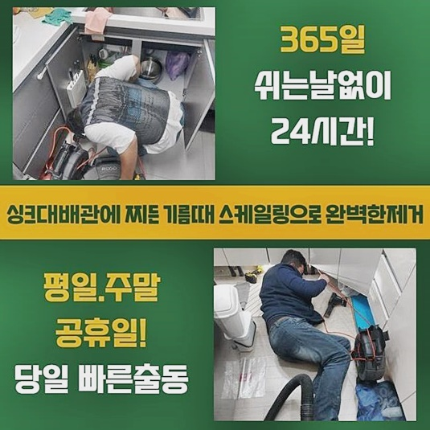
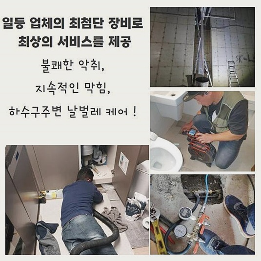
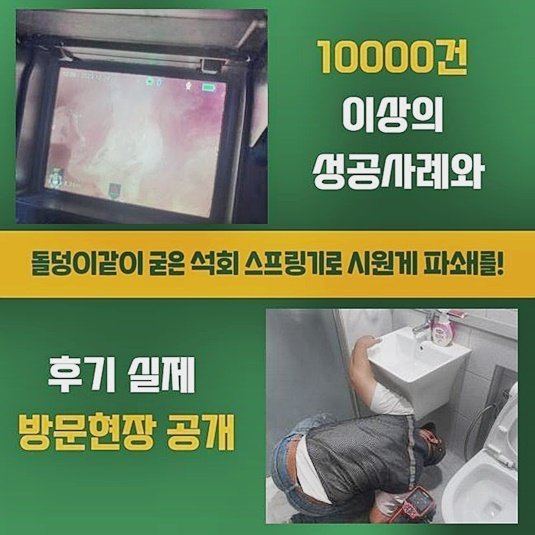
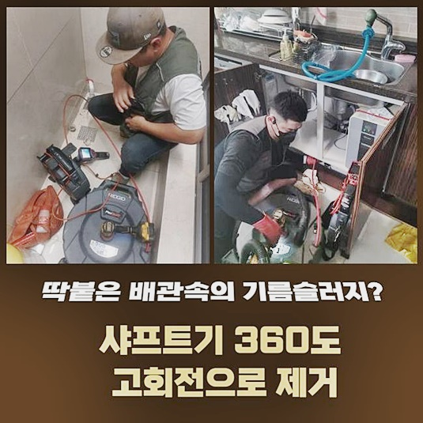
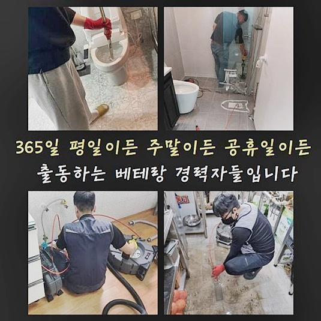
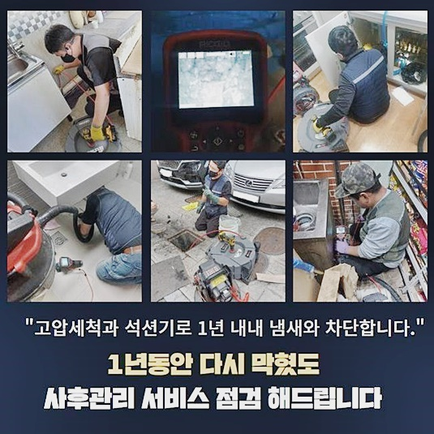

🏠 서초구 양재동변기역류 신원동 배관내시경카메라 통수전문
서울 서초구 변기막힘 전문 시공 후기

📋 작업 개요
- 위치: 서울 서초구, 서초구, 서울
- 서비스 유형: 변기막힘, 하수구막힘, 배관막힘, 누수수리, 역류해결, 뚫는업체, 배관청소, 고압세척, 설비공사, 악취차단
- 작업 일시: 2024. 8. 7. 10:36
- 업체명: 하수구수사대 (010-5615-2118)
🔍 문제 상황
서초구 원지동대변기막힘 신원동 냄새차단 누수탐지공사
수많은 배수구와 연관된 문제들을 잠재우고 처리하는 전문진이에요
의뢰인이 의뢰해주실 때라면 시간에 관계없이 문제상황에 대해서 상담을 이어갑니다
며칠전 화장실공간의 배수구가 이상하다는 의뢰로 빠르게 현장으로 찾아갔습니다
화장실의 경우 사용후에 머리카락등과 이런저런 이물이 침전되어 통수에 불능이 야기되는 현장들도 상당해요
이같은 상황에선 근방에서 구입가능한 개체로는 완벽히 시정하는게 까다로운 탓에 작업 시 전문가 용 장비를 통해서 증세의 시발점 부위를 집중타격해야해요
간혹 끓고있는 물을 부은 뒤 믹힘을 제거시키도록 실시하는 의뢰자도 계십니다
이러한 방식도 해결을 꾀하는데에는 무리가 따라요
뜨거운 물을 부어주면 고착물은 딱딱하게 굳어지는 특징을 가지고 있어서 배관 컨디션을 악화시킵니다
그러므로 배수관의 문제는 성능이 좋은 장비라인을 통해야되겠습니다
수리 진행 시 쓰는 기기를 꼼꼼히 체크하고 의뢰자가 전달하신 현장으로 신속히 달려갔죠
단순한 하수관의 증상외에 설명드린것처럼 머리카락과 석회질 성분의 잔해물이 쌓여요

🔎 원인 분석
💡 전문가 진단: 정밀 진단 장비를 사용하여 슬러지의 고착 여부를 판명하고 타격/세척 작업을 실시했습니다.
이러한 이유로 간헐적으로라도 관리법 실시를 이어주는게 중요합니다
의뢰자분껜 작업내용을 고지하고 추후에 근원을 살펴 불편을 어떠한 방법으로 완화하는지 세밀하게 설명하겠습니다
막힌 구간은 화장실 내측에 자리한 바닥배관으로 보였습니다
체크하니 전형적인 사각형태의 부속품은 아니었고 트렌치부분으로 보였는데요
통수불능과 갑작스레 역류되는 증상도 지속되고 있었습니다
보통의 경우 트랩부속을 통과하여 하수관로로 빠지지못한 잔여물은 걸러져서 액체형태의 하수는 아래로 운반시키는 장점들이 존재합니다
허나 안측에 쌓여있던 잔해가 외부로 역류를 동반하며 트랩설비도 있으나마나한 모습이였습니다
고객은 증상들이 야기되고 샤워실을 전혀 쓸 수 없겠다고 불편들을 전달해주셨었는데 피해규모가 클 것으로 생각되어졌죠
이토록 화장실공간의 시설에서 증세가 발생된다면 예상치못하게 피해들이 생겨나죠
그렇기에 조속하고 확실하게 증세를 완화하는게 첫번째로 필수적이죠
먼저 증세들의 시발점부터 파악해야해요
상단의 촬영부속이 접착된 내시경장치로 하수라인으로 이용한다라면 문제의 근원을 주시해주며 작업방식을 결정해 해결들을 해주게되요
이런 탓에 다양한 증상이 생겨난 시점에 필수적으로 써줘야되는 장치입니다

🔧 작업 과정
앞부분에서 잔해가 축적되어 장치를 배수라인으로 삽입하는게 어려웠죠
하지만 예기치않은 사항에 무너질 순 없죠
지속적인 시도끝에 비로소 케이블을 투입했고 심부까지 확인하기위해 안쪽을 체크하다가 제대로 보이지를 않았습니다
벽면쪽엔 이물량이 심각수준이였습니다
그리고 안쪽지점을 확실하게 파악할 수 없는것으로 파악하건대 바깥쪽과같이 깊숙한 부분에도 상당수의 잔해가 쌓인걸 확인해보았습니다
지속적으로 배관으로 내시경장비를 투입시키자 벽면쪽엔 알 수 없는 이물이 보여졌어요
하수관로의 심층부엔 정체가 불분명한 형태들로 축적된 이물들이 보였습니다
장치를 밀어넣어도 통수공간은 협소했지만 고착화된 이물은 눈에 띄게 확인할 수 있었어요
이물들이 특정된 상태가 아님에도 굳어버린 잔여물이 하수관로의 끝머리서부터 누적되어버린걸 알 수 있었어요
애로사항이 많던 현장이였으나 고객분의 의뢰였기에 해당 문제들을 내버려두어선 안되었어요
하수도에 쌓인 여러가지의 잔여물은 수작업으로 걷어내주고 하수도 깊이 누적된 것들은 샤프트 장비라인을 사용해서 청소할 예정이였습니다
전문성을 갖춘 장치를 사용하는 까닭에 조속히 시정했어요
그러나 잔여물질을 청소하면서 의문의 요소가 존재했어요
어떠한 까닭으로 장판의 일부분이 하수도에서 축적된건지 인과관계를 파악하기 힘들었어요
이런 의문을 풀지못하고 작업 도중에 고객분은 이를 운을 떼기 시작하셨어요
파악해보니 최근에 도배작업을 했는데 아마도 잔해들이 하수도로 빠진것으로 보여진다고 하셨어요
공사 진행뒤에 잔해물은 전문가가 폐기시키는게 맞습니다만 간혹 정리부분에 부족함을 보이는 전문가면 이곳에서처럼 전문적이지 못하게 잔해물을 배출하는데요
추측하건대 저희가 내방했던 현장에선 이와같은 문제로 불편들을 꾸준히 받아오고 계셨습니다
이곳저곳에 장판이물질들이라는 이물이 통수를 이뤄지지못하게 하면서 진작에 흘러가야되는 하수가 역류해버린거죠
깨끗해질때까지 잔해세척과 흡입절차까지 진행한 결과 끝내 하수관을 뚫었죠


✅ 작업 완료
통수가 잘 이뤄지는지 체크도 하였더니 이전과 다른 양상으로 물들이 빠져나갔죠
시공 뒤에 오늘과같이 내려가야하나 하수관로가 여러 이물질로 공간이 없어 흐름이 멈춰 역류도 불거지게되었죠
수많은 장소들을 방문드렸지만 같은 전문가의 입장에서 안좋은 기분이 밀려오고 의뢰자가 감수해야되는 피해들에 이입이 될 수 밖에 없어요
이것처럼 문제들을 말끔하게 시정하고 저희들도 뒷정리를 하고 철수했는데요
일상 중에 혹시 통수오류가 생겼을 시 저희의 안내를 기초로 해 안전하게 처리하시는 게 합리적입니다!
또다른 의문이 남아있다면 빠르게 연락주시어 질의해도 환영이며 편하게 상담을 원하신다면 여러분께 도와드릴게요!




⚠️ 베란다 누수 및 방수 관리 방법
- ✅ 비가 많이 올 때 창틀 주변이나 아래층 천장에 얼룩이 생기는지 정기적으로 확인해 보세요.
- ✅ 우수관 주변 실리콘 마감이 들뜨거나 깨진 틈새가 있는지 손상 여부를 수시로 체크하세요.
- ✅ 베란다 바닥 타일의 줄눈(메지)이 소실되면 그 틈으로 물이 침투하여 누수가 유발됩니다.
- ✅ 누수 의심 증상 발견 시 방치하면 아래층 손실이 커지므로 즉시 전문가의 진단을 받으십시오.
💡 핵심 정리
- 확실한 장비 작업(내시경 점검 및 샤프트 스케일링)으로 원인을 뿌리 뽑습니다.
- 작업 후 1년 이내에 동일한 부위 재발 시 100% 무상 A/S 서비스를 보장합니다.
- 서울 · 경기 · 인천 전 지역에 24시간 언제든 긴급 출동할 수 있도록 항시 대기 중입니다.
❓ 자주 묻는 질문 (FAQ)
🚨 서울 서초구 변기막힘 문제로 고민이신가요?
정확한 원인 진단과 확실한 시공으로 재발 없는 해결을 약속드립니다.
24시간 긴급 출동 | 서울 · 경기 · 인천 전지역 | 1년 내 재발 시 무상 A/S